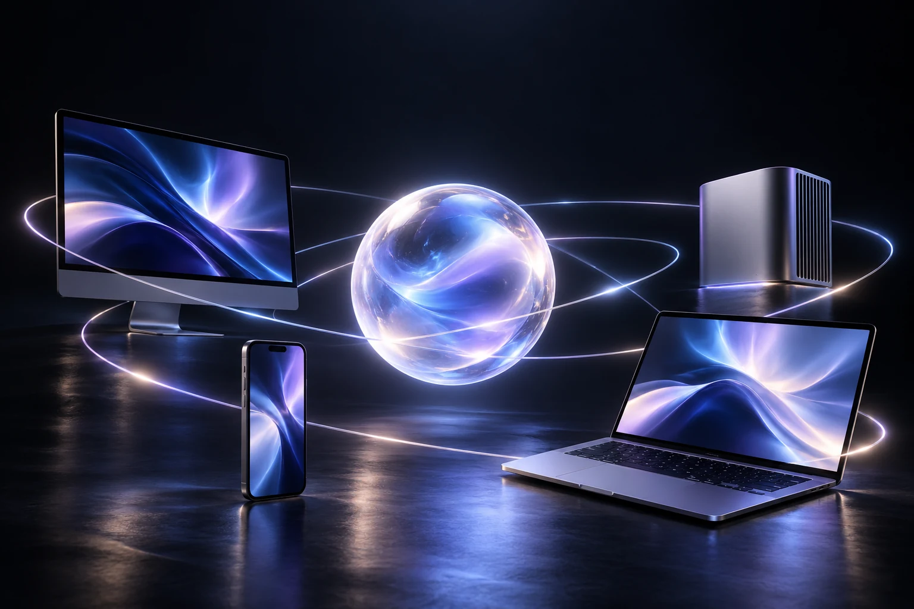

AI. IN ACTION.
想得到。做得到。
终端。文件。桌面。
MCP · P2P · TCP / UDP / HTTP让 AI，连接你的世界。
FILES. IN FLOW.
文件。随心流动。
浏览 · 编辑 · 传输跨越设备，自在流转。

EVERYWHERE. TOGETHER.
距离，不再是距离。
MCP · P2P / Relay一个相连的工作空间。
AI. IN ACTION.
FILES. IN FLOW.

EVERYWHERE. TOGETHER.